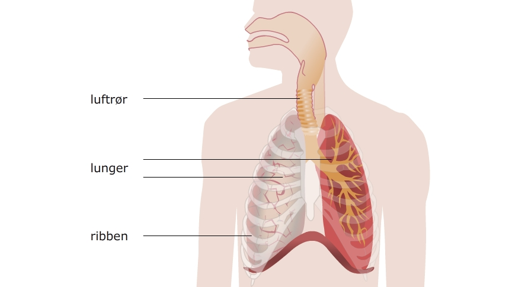
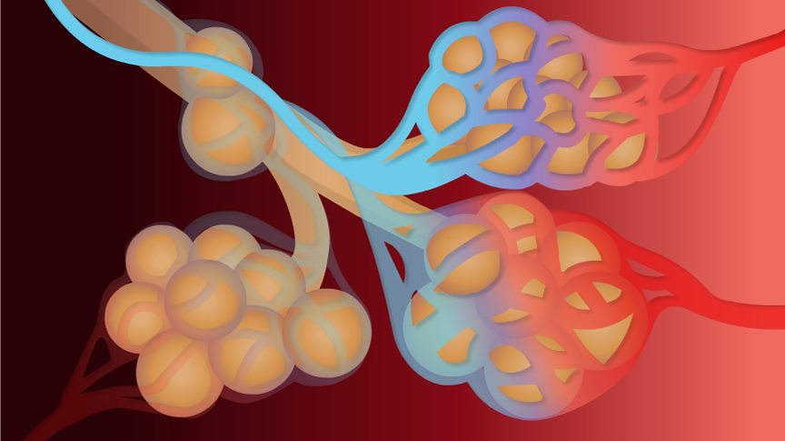

Hver gang vi trækker vejret, kan vi mærke vores brystkasse løfte sig. Følelsen er, at der kommer luft ind i en stor sæk, der udvider sig. Når vi puster ud, tømmes sækken. Langt hen ad vejen er dette også korrekt. Men lungerne er opbygget anderledes end en stor sæk. Dette afsnit vil beskrive lungernes opbygning og udseende.
Lungerne er placeret i brysthulen og er omringet af ribbenene som vist på billedet nedenfor. Ribbenene beskytter lungerne, så lungerne ikke bliver skadet.
Billedet viser en skitse af, hvordan lungerne ser ud. De to lunger er kegleformede og er bløde og svampe-agtige. Deres overflader er hvide og blankt skinnende (personens højre lunge på billedet). Under overfladen er lungerne rødlige (personens venstre lunge på billedet). Denne røde og kødlige del af lungerne kaldes lungevævet. Når vi fødes er vævet lyserødt. Men med alderen bliver farven mørkere og mere grålig. Forandringen skyldes de daglige skadelige partikler, som vi indånder - feks. fra tobaksrøg eller bilers udstødning.
Hvis lungevævet fjernes, ses lungernes indvendige struktur tydeligt (personens venstre lunge på billedet. Midt på billedet ses luftrøret, hvor luften kommer ind fra munden og næsen. Luftrøret deler sig i 2, og kaldes nu bronkier. De kaldes bronkioler. Luftrør, bronkier og bronkioler er hule og indeholder den luft, vi indånder.
Yderst på bronkiolerne findes små luftblærere, kaldet alveoler. På billedet nedenfor kan du se en tegning af alveolerne.
Tegningen viser alveolerne som runde sække. I virkeligheden er alveolerne så små, at de ikke kan ses uden mikroskop. Rundt om alle alveolerne sidder små blodårer, kaldet kapillærer.
Det er den tætte kontakt mellem alveolerne og kapillærerne, som gør, at luft kan komme fra lungerne og over i blodet.
Luften kommer ind gennem luftrøret og bevæger sig videre ned i bronkierne og bronkiolerne. Til sidst ender luften i de runde alveoler, der findes for enden af bronkiolerne. Alveolerne er dækket af små kapillærer.